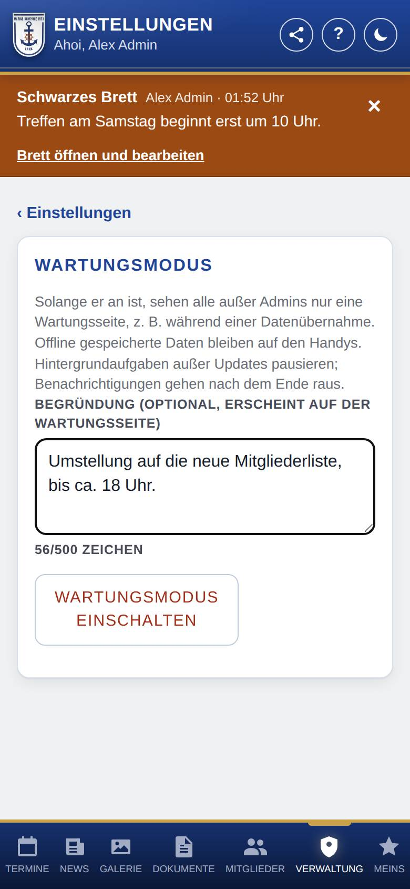
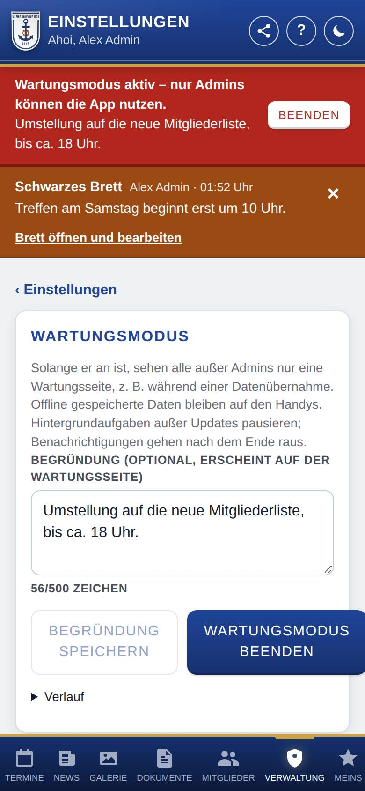
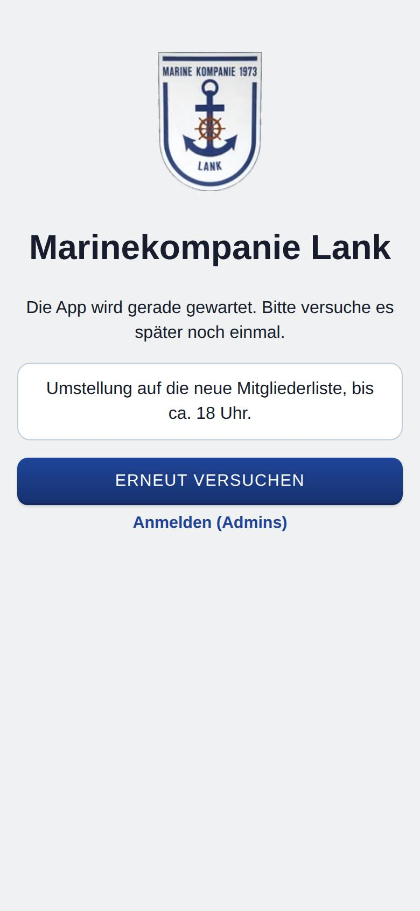

Wartungsmodus
Der Wartungsmodus sperrt die App vorübergehend für alle außer Admins, zum Beispiel während einer Datenübernahme oder größerer Korrekturen. Hier schaltest du ihn ein und wieder aus.

So öffnest du die Seite
Tippe unten auf Verwaltung, dann auf Einstellungen und auf Wartungsmodus.
Was du hier siehst
- Begründung (optional, erscheint auf der Wartungsseite): ein Text für alle anderen, höchstens 500 Zeichen. Darunter steht, wie viele Zeichen du schon verwendet hast.
- Wartungsmodus einschalten: solange der Modus aus ist.
- Begründung speichern und Wartungsmodus beenden: solange der Modus an ist.
- Verlauf: zum Aufklappen; wer den Modus wann ein- oder ausgeschaltet hat (die letzten 20 Änderungen).
So gehst du vor
Den Wartungsmodus einschalten
- Trage bei Bedarf eine Begründung ein, z. B. „Umstellung auf die neue App, bis ca. 18 Uhr“.
- Tippe auf Wartungsmodus einschalten.
- Bestätige die Rückfrage. Die App meldet „Wartungsmodus ist an.“
Solange der Modus an ist, steht für dich oben auf jeder Seite ein rotes Banner. Du arbeitest ganz normal weiter.

Alle anderen sehen nur die Wartungsseite mit deiner Begründung und dem Knopf Erneut versuchen. Wer nicht angemeldet ist, findet dort Anmelden (Admins).

Die Begründung ändern
- Ändere den Text bei Begründung.
- Tippe auf Begründung speichern.
Den Wartungsmodus beenden
- Tippe im roten Banner auf Beenden oder hier auf Wartungsmodus beenden.
- Die anderen sehen die App wieder, sobald sie auf Erneut versuchen tippen oder die App neu öffnen.
Gut zu wissen
- Daten, die schon offline auf den Handys liegen, bleiben dort gespeichert. Die Wartungsseite hat aber Vorrang.
- Hintergrundaufgaben wie der Abgleich von Kalender und Galerie pausieren. Updates und Statusmeldungen laufen weiter. Benachrichtigungen, die in dieser Zeit entstehen, gehen erst nach dem Ende raus.
- Mit WordPress bleibt die übrige Webseite erreichbar. Den Wartungsmodus kannst du dort auch im WordPress-Backend auf der Seite der App ein- und ausschalten, falls die App selbst nicht erreichbar ist.
- Schaust du dir die App gerade als andere Rolle an, siehst du ebenfalls die Wartungsseite (siehe App als Rolle ansehen).